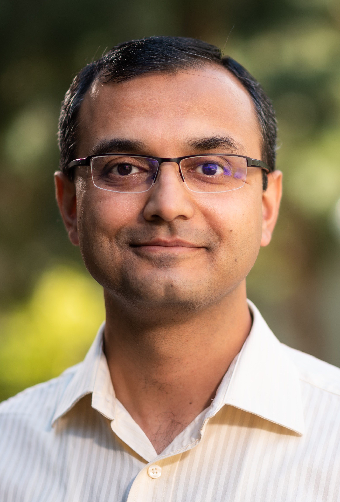

Ambuj Tewari | अम्बुज तिवारी
Professor
Department of Statistics
Department of Electrical Engineering and Computer Science (by courtesy)
University of Michigan, Ann Arbor
tewaria@umich.edu
My primary area of research is artificial intelligence (AI) with a focus on machine learning (ML). My research group focuses on rigorous theoretical analysis of AI and ML models and algorithms. We also work on challenging real-world applications especially in chemistry and psychiatry. My work has been supported by an NSF CAREER grant (2015), a Sloan Research Fellowship (2017), an Adobe Data Science Research Award (2020), and a Facebook Research Award (2021). In 2022, I was named as a Fellow of the Institute of Mathematical Statistics. In 2023, I was awarded an Early Career Award in Statistics and Data Sciences by the International Indian Statistical Association.
I serve on the editorial boards of Journal of Machine Learning Research and Statistical Science.
I was born in Agra, India, home of the Taj Mahal. My family traces its roots to the old city of Kannauj, the perfume capital of India. My alma maters are IIT Kanpur (B.Tech., 2002) and UC Berkeley (M.A., 2005 and Ph.D., 2007. Advisor: Peter Bartlett). I was a research assistant professor at TTIC from 2008 to 2010. From 2010 to 2012, I was a post-doctoral fellow at UT Austin where I worked with Inderjit Dhillon and Pradeep Ravikumar.
My younger brother Anuj Tewari is Head of Research, Google AI Overviews and Search Result Page.
Activities at U-M I'm involved with: